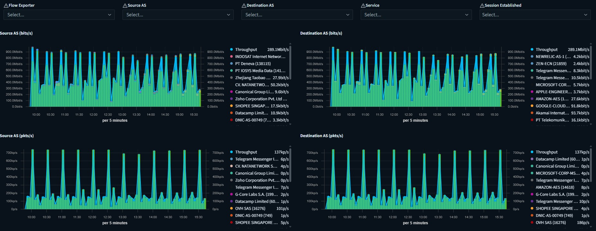

DEFENSIVE & OFFENSIVE LABS
Cybersecurity Projects
Research and simulation mapping to vulnerability assessments, threat intelligence, and defensive architecture.
🔍 Vulnerability Scanning with NMAP Script Engine (NSE)
- Network surface scanning to identify security loopholes and exposures.
- Automated auditing of open ports and services on internal servers.
- Traffic policy recommendations based on discovered service vulnerabilities.
- Documentation of finalized firewall rules and mitigation strategies.
Vuln Assessment
View Details
📈 Advanced Traffic Flow Monitoring with ElastiFlow

- Containerized deployment of ElastiFlow and OpenSearch via Docker Compose.
- Core NetFlow/S-Flow configuration on backbone routers and firewalls.
- Visual dashboard design for real-time traffic pattern analysis.
- Log ingestion auditing and historical reporting for external traffic.
- Weekly maintenance of OpenSearch data indices and performance shards.
NetSec Ops
View Details
👨💻 Python Threat Discovery with Shodan InternetDB API
- Comprehensive research on Shodan's InternetDB API capabilities.
- Custom Python script development for automated vulnerability scraping.
- CSV/JSON data exporting for IP-to-CVE mapping results.
- Validating public IP exposures and unauthorized service visibility.
OSINT Scripting
View Details
🕵️♂️ Advanced Honeypot Deployment with T-POT All-In-One
- Deployment of multi-service honeypots (Honeynet architecture).
- T-POT OS platform installation on dedicated virtual resources.
- Public-facing port forwarding for simulated vulnerable services.
- Continuous monitoring of global attack signatures and IP reputations.
- Attacker methodology analysis using automated forensic tools.
Deception Tech
View Details